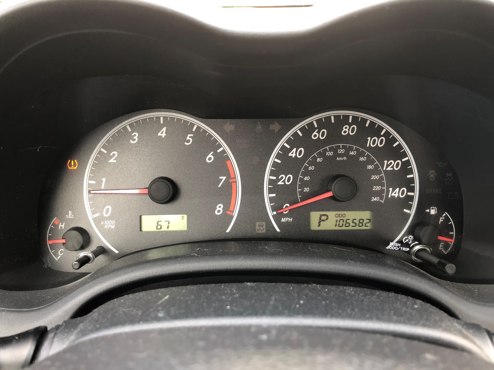

The engine temperature display has the temp in Celsius specifically.
The gas gauge labels are not obvious, with full being displayed as 1/1, which doesn't mean anything.
Design Pros
There is an outside temperature display.
The miles per hour and kilometers per hour numbers are different colors on the speedometer, differentiating them.
Case 2
Design Cons
There's no outside temperature display.
The kilometers per hour numbers are a bit small, and easily missed.
There's no label of empty on the gas gauge.
Design Pros
The gear shift is displayed.
The high numbers on the tachometer are red, and very obvious.
The gas gauge and engine temperature displays are a good size and height, so they're easily seen.
Case 3
Design Cons
The silver design accent around the odometer take space from the display.
There's no outside temperature display.
Design Pros
The speedometer is large and the focus of the dashboard.
The tachometer doesn't take up space it doesn't need to.
The gas gauge is high and doesn't get hidden behind the steering wheel.
The miles per hour and kilometers per hour numbers are different colors on the speedometer, differentiating them.
Case 4

Design Cons
The gas gauge and engine temperature displays are small and low, easily hidden by the steering wheel.
The speedometer should be the biggest display on the dashboard.
The kilometers per hour numbers are a bit small, and easily missed.
There's a lot of wasted space in the tachometer.
Design Pros
There is an outside temperature display.
The odometer and outside temperatures display screens are obvious.
Case 5
Design Cons
There's no outside temperature display.
The kilometers per hour numbers are a bit small, and easily missed.
The tachometer and speedometer run into each other, and have the same font and color scheme. At first glance, it's hard to differentiate.
Design Pros
The gear shift is displayed.
The gas gauge and engine temperature displays are a good size and height, so they're easily seen.
The speedometer is the largest and has the focus of the dashboard.
Answers for B:
Common Uses
Check at what speed the car is currently driving.
Watch the gas level, and re-fill it when it gets low.
Check the outside temperature, if display is present.
See warnings, when they pop up.
Rare Uses
Seeing the current gear shift position.
Although it is crucial, it is very rare to have to check the temperature of the engine. It is usually okay.
Same with the tachometer. It is important, but it usually never reaches the red zone.
Console applications are not displayed on the dashboard, like a map or controlling music.
User Interactions
When the gas or brake pedals are used, the speedometer reflects the change in speed.
Specifically when the gas pedal is pushed, the tachometer increases when the speed does.
When using the turn signals, the arrow display turns on until the turn is complete. And the emergency signal keeps both
arrows flashing until it is manually turned off.
When using the cruise control, the display turns on and says when it is set.
When the gas is re-filled, the gauge resets to show the current level.
Common Mistakes
Looking at the tachometer, instead of the speedometer.
Using the kilometers per hour numbers, instead of the miles per hour.
Thinking the gas cap is on the wrong side of the car.
Not understanding the warning symbol.
Design Improvements
The speedometer should be large and prominent.
The specific numerical speed should be displayed, and easily read.
There should be a way to switch between miles per hour and kilometers per hour.
A label can be added to the warning symbols, to specify what they mean.